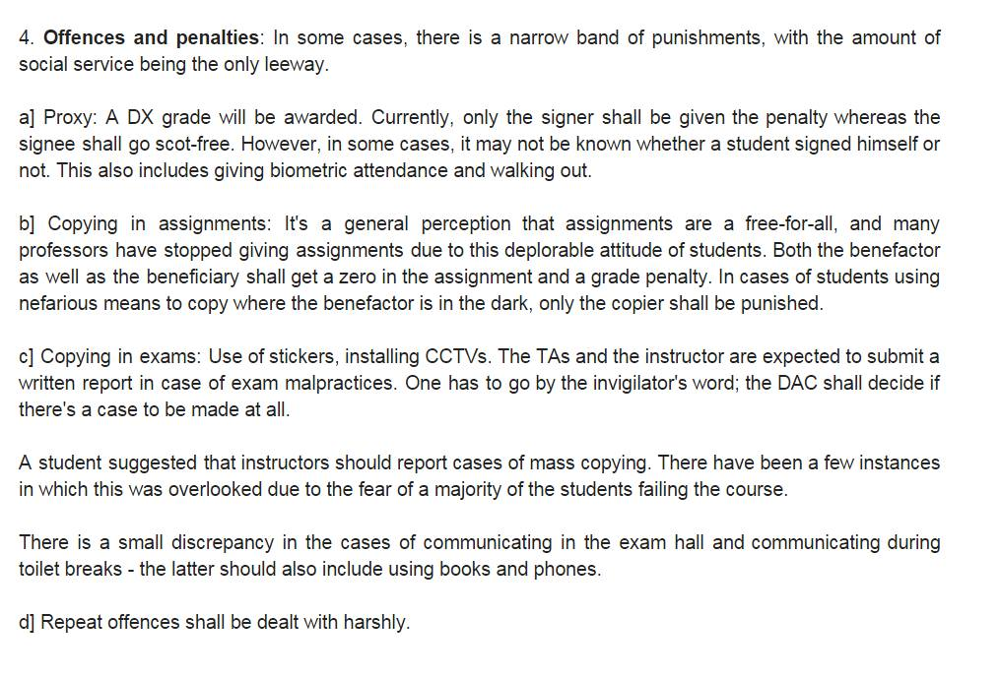

My firstreaction on listening to the recent ethics committee decision was:
“Der aaye durust aaye”.
So far, IITB used to make half-hearted pleas for this elusive thing called academic honesty, while actually doing nothing to change the existing system—a system that is tipped heavily in favor of the dishonest.
In this respect, IIT Bombay is a microcosm for the country as a whole. I have argued elsewhere that, in a place like India, where dishonesty and corruption are often the norm, it’s almost unfair to expect people to be honest while the system remains optimized for the dishonest.
Whether it be corruption at the national level or academic dishonesty at the college level, the fundamental equation remains the same—the disincentive needs to be systemic and systematic, not incidental.
Take the case of someone who is given a fail grade in a course merely because he didn’t attend enough classes (let’s keep aside, for the moment, the rather contentious topic of whether XX/DX grades do any good). His friends, who attended fewer lectures than him, have managed to pass through because they asked someone to sign the attendance sheet for them. Alternatively, imagine a student who gets a lower grade than the rest of his class because no one else found anything wrong in cheating in a major assignment.
Cheating is rampant across academic institutions in India today.
Honestly, I don’t even need to write this all in justification, because IIT Bombay has previously tackled something similar—ragging—and it has worked extremely well.
While ragging and cheating aren’t exact parallels (for starters, the benefits of cheating are significant, especially in a system that largely ignores it), it is pretty similar to our current topic of handling academic dishonesty in many ways.
The institute wants neither to happen. Both activities give some kind of immediate positive utility to the person who commits them. Both are very strongly linked to the ‘culture’ of a place. Most people roughly agree that both are bad. In both cases, the perpetrator justifies their actions rather easily (“I was ragged for two years, why should I not rag my juniors now? It’s all just fun” / “Everyone else is cheating in the take-home exam. If I don’t, I will be the only guy who gets a low grade.”)
Today, ragging is no longer a part of ‘IITB Culture’; 10 years ago, it was. What changed? For sure, students did not suddenly decide not to rag out of the goodness of their hearts. The institute made it clear that ragging would be dealt with in a no-nonsense way, and did not shy from making true on that promise. Sure, it pinched the initial few batches who got a raw deal, but today, we can proudly talk of a ragging-free college and a ragging-free culture.
Honestly, I don’t even need to write this all in justification, because IIT Bombay has previously tackled something similar—ragging—and it has worked extremely well.
In a demonstration of Michelangelo's unique standing, he was the first Western artist whose biography was published while he was alive
There is another case study in the institute, and this one’s right at the heart of the matter: the CSE department. It is typically stricter about this issue—students who copy assignments often get burnt right in their freshie / sophie year, with a clear message that dishonest practices would be met with at least a grade penalty (with an FR as fairly likely too). This does two things: it significantly disincentivizes dishonest practices, and it makes it ‘okay’ for students to not abet cheating. So the next time someone asks you for your assignment, you can simply say that you can’t risk getting an FR, and voilà you are no longer termed “RG” for refusing to partake in this behavior.
If the institute encourages a culture of dishonesty by doing nothing about it, and then randomly penalizes a few fourth year students at the end of their IIT career, giving them FRs and ruining their graduation, it’s not being wrong, but it’s acting like the mother in a famous fable who doesn’t stop her kid when he steals small stuff from his schoolmates, but later blames him for becoming a thief and going to prison.

A summary of punishments proposed for each offecne by the committee
So far, the institute (barring a few cases) has largely behaved like that mother, dealing with academic dishonesty in a very ad-hoc fashion. Some professors get riled up over even minor copying in a lab report, while others don’t bat an eyelid despite students photocopying entire assignments and submitting them.
Now, it is true that there is at least some influence of curriculum design, teaching methods, quality of assignments etc. on students’ desire (and self-rationalization) to cheat, and the institute should definitely be trying to improve itself on these axes, but as far as dealing with the general malaise of dishonest practices goes, there is but one way to go.
Step 1 of the transformation is now over. The institute has defined infractions and their punishments reasonably well. It remains to be seen how well different departments end up enforcing them. I will keep my fingers crossed.
Author:
Load comments: There are 33 of them.